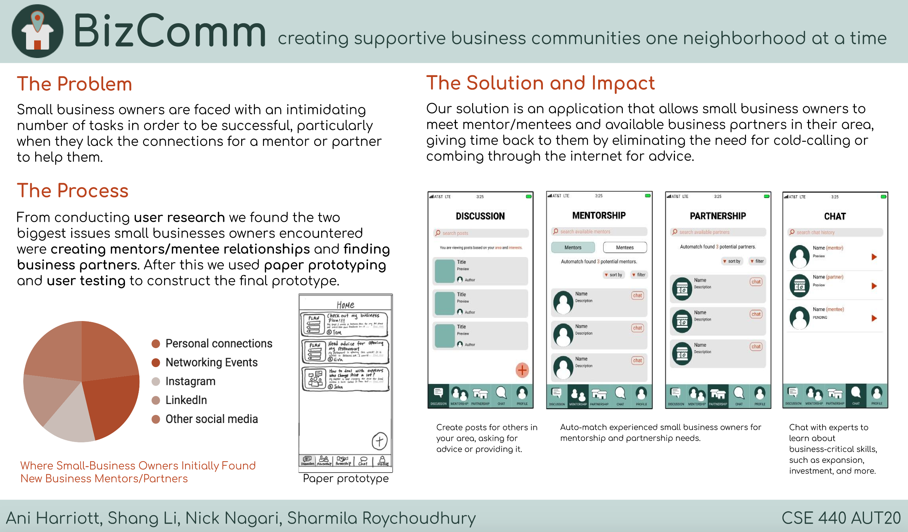

Computer Science
Visa Internship
Experience in industry
Summer 2020
During summer of 2020 I worked at Visa as a Software Test Engineer intern, however as the program was redesigned and moved virtually I worked as a general Software intern with other interns around the world. I worked on two main projects over the course of the internship, and I learned a lot about working in a virtual environment, the importance of communication, and developing my leadership and self-sufficiency. In addition I developing my programming skills, specifically in the ethical hacking realm. The two projects I worked on included a white paper and a cyber security challenge.
White Paper
The first project I worked on was very different from anything I had done in my courses, and focused more on the business side of the company. I was part of team of interns from all across the U.S. that was tasked with developing and presenting a new solution to help Visa accelerate the world into a cashless society. The solution that my team and I came up with was called VHub and is outlined in the white paper attached. Our goal was to bring the benefits of a digital wallet to the unbanked using existing technologies.
This project taught me a lot of new skills as it wasn't focused at all on the programming. I learned a good deal about communication, particularly the amount of planning that is required when dealing with different time zones, and it feels especially important now to have prompt and clear communication when we are all so physically different. I also learned about the payment industry as a lot of background research was necessary to create an effective and implementable idea. One of the most important things I learned was that when developing a new tech solution for a company its preferable to try to combine existing systems in new ways, as this is the most cost effective and implementable. This white paper project also gave me a chance to work on and develop my technical writing skills and make my writing more concise with the limited page count we had. The portion of the paper that I contributed to the most was the Competitor section, as well as a good portion of the statistics.
PUT IN WHITE PAPER
Cyber Security
The second project I worked on was a cyber security challenge that I did with one other intern. This was very interesting to me because I had never done any kind of cyber security or ethical hacking so there was a lot to learn. In this project a partner and I first worked on the software WebGoat where we learned some hacking skills, and then we were given five days to hack a website that Visa developed for that purpose. Over the course of the five days my partner and I found and exploited vulnerabilities in the site through things like injection and broken authentication. Hacking is still very new to me, but after this challenge I'm interested in learning more and potentially taking a course on cybersecurity at UW. Not only did I learn a great deal about the different methods behind hacking, I also learned a lot about the patience and persistence required to fully check a website for vulnerabilities.
CSE 440
Intro to Human-Computer Interaction
Autumn 2020
I was so excited to take this class since it was my first opportunity to have formal learning in the design aspects of computer science. I was surprised that this class din't have any programming portion, but I enjoyed learning a lot about the user perspective and learning good design practices. Referenced is my final project poster.
CSE 473
Artifical Intelligence
Winter 2021
This course was also very helpful in directing my post-graduation plans. Coming off of the past few quarters online, and since I hadn't taken a course with programming in it since the Spring, I was feeling very disconnected from CS as a career. Taking this course which was very programming focused reminded me how much I do enjoy programming and reaffirmed that CS is something I want to do when I graduate. Included is a snippet of code from the Pacman assignment.
PUT IN AN ARTIFACT
CSE 154
Web Programming
Spring 2021
This was a very exciting course for me because it was my first hands on experience coding user-interfaces from scratch. This course allowed me to explore what a front-end development route might look like and confirmed for me that I want to take my post-graduation plans in that direction. I've included a screenshot of the first creative project we did with just basic html/css.
PUT IN AN ARTIFACT
CSE 442
Data Visualization
Winter 2022
I absolutely loved this course and was very excited to take it. The course continued to open my eyes to all the possible applications of CS, and I was very excited and interested to learn about another way I could use my skills in a more visual/design oriented way. I've included a link to my final project.
Final Interactive Project